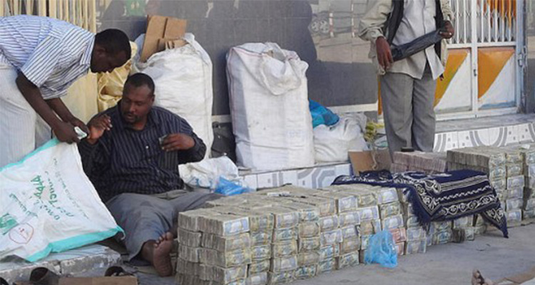
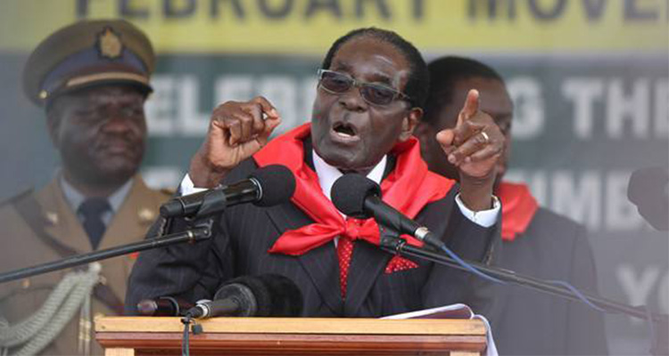
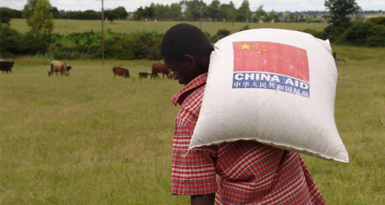
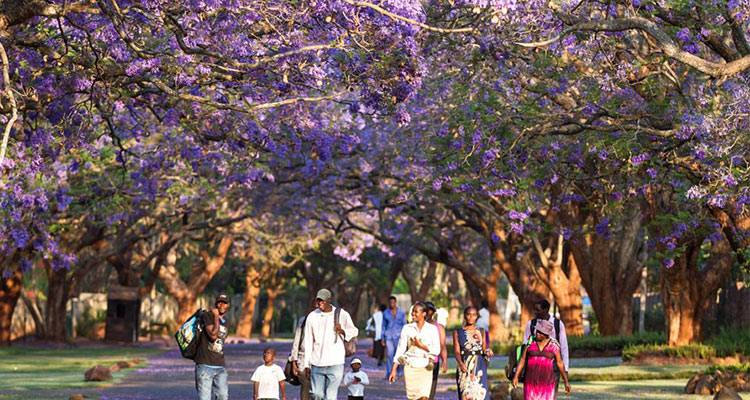

“哪里有压迫，哪里就有反抗！”经历过举国战乱的人民，一定都会有着这种心声。津巴布韦，一个在政治书中以“通货膨胀”的反例出现的国家，同样也遭受过压迫。
1980年4月18日，津巴布韦终于完成了独立，成为非洲大陆获得民族独立的第50个国家。津巴布韦在班图语系中是“石头城”或“石屋”的意思。在首都哈拉雷市以南300多公里的地方，在南纬20°线附近有座城市，叫维多利亚堡。1868年在城南24公里的地方，发现了一座巍然屹立的石头城——非洲著名文化遗迹，大津巴布韦遗迹，津巴布韦由此得名。
9世纪末，英国殖民主义者罗得斯创办的“英国南非公司”侵占了津巴布韦，在这里建立了英国的殖民统治，津巴布韦因此被命名为“南罗得西亚”。1964年，南罗得西亚的白人政权自行把国名改为罗得西亚，随后又宣布所谓的“独立”，推行野蛮的种族压迫政策。津巴布韦人民奋起反抗，于1966年4月28日在锡诺亚打响了反对殖民统治的第一枪，从此开始了争取民族独立和解放的斗争。1979年4月白人种族主义政权宣布瓦解。1980年2月27日到29日，津巴布韦举行了独立大选，选举结果，穆加贝领导的津巴布韦非洲民族联盟以压倒优势获胜，他本人出任新政府总理兼国防部长；4月18日，津巴布韦宣告独立，定国名为津巴布韦共和国。
建国以来，津巴布韦的国民经济取得了迅速的发展，国民生产总值以平均每年10%的速度递增。农业、采矿业和制造业被称为津巴布韦经济的三大支柱。津巴布韦地处热带高原，气候温和，雨量充沛，土地肥沃，适宜种植烟草、玉米和牧牛（肉用），粮食除自给自足外，还向邻国出口。津巴布韦还是非洲最大的烟叶生产国和出口国。同时，津巴布韦的矿产资源也极为丰富，有煤、铬、铁、石棉、黄金、锂等四十多种，其蕴藏和开采量在非洲和世界都占有重要地位。津巴布韦的制造业有食品、金属和金属制品、化工等。轻工业产品远销世界各地。
 1、中国人民和津巴布韦人民在长期斗争中互相同情和支持，结下了深厚的友谊；
2、津巴布韦独立的当天，中国与津巴布韦就建立了外交关系。